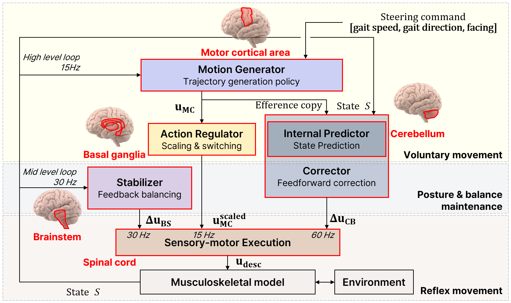
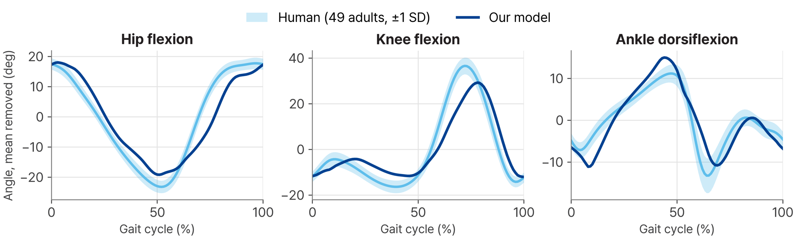

Toward an interpretable human model for wearable robot simulation
EXO Lab, Dept. of Mechanical Engineering, KAIST
Human Physical AI Research Center
Poster, NVIDIA GTC 2027
Wearable robots are increasingly trained and tested in simulation, which needs a simulated wearer that responds the way a person does. Controllers that imitate recorded motion reproduce the gait but do not show how it is produced. We built a walking controller from modules that each take the role of one brain region. Each module can be weakened on its own, which changes gait in a way that resembles the corresponding patient group.

| Module | Role | How it was trained |
|---|---|---|
| MC, motor cortex | Joint motion from a speed and direction command | Supervised, from a teacher policy (PPO + AMP) |
| BG, basal ganglia | Movement vigor (dopamine level) | Analytic model |
| CB, cerebellum | Predicts the next joint state, corrects the command | DAgger |
| BS, brainstem | Balance recovery after a disturbance | PPO |
All training and tests ran in NVIDIA Isaac Sim / Isaac Lab, with 4,096 walkers simulated in parallel on a single NVIDIA RTX PRO 6000 GPU. The teacher policy was trained with NVlabs ProtoMotions.
MC alone produces the stepping pattern. With the pelvis held in the air it steps freely; on the ground, without the balance and correction modules, it cannot keep walking for long.
The plots show the joint angles planned by MC, the angles actually reached, and the difference between them. The second half scales the corrector output down to 70 %.
The foot catches a 6 cm obstacle. The plots compare walking with and without BS: its output rises at the trip, and pelvis tilt and walking speed return toward normal.
